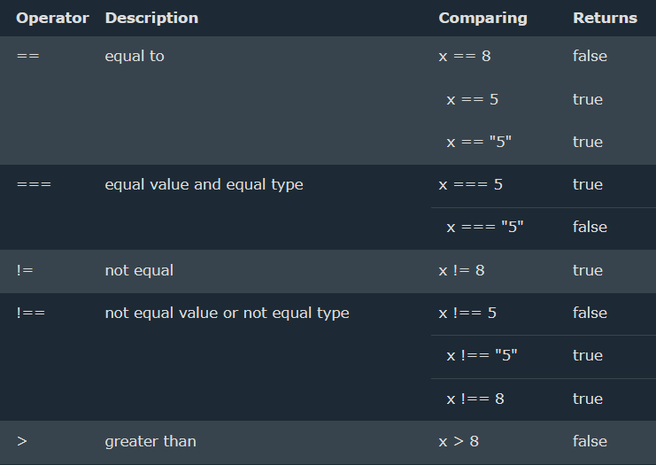
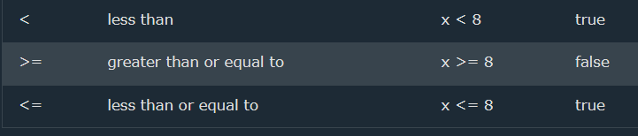
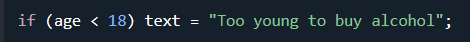
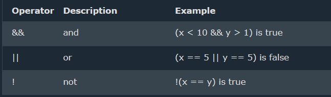
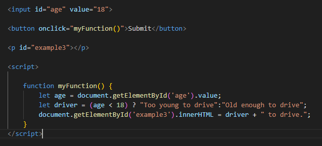

Comparison and Logical operators are used to test for true or false.
Comparison operators are used in logical statements to determine equality or difference between variables or values.
Given that x = 5, the table below explains the comparison operators:
 Comparison operators can be used in conditional statements to compare values and take action depending on the result:
Logical operators are used to determine the logic between variables or values.
Given that x = 6 and y = 3, the table below explains the logical operators:
The && operator returns true if both expressions are true, otherwise it returns false.
JavaScript also contains a conditional operator that assigns a value to a variable based on some condition.
variablename = (condition) ? value1:value2
Input your age and click the button:
Comparing data of different types may give unexpected results.
When comparing a string with a number, JavaScript will convert the string to a
number when doing the comparison. An empty string converts to 0. A non-numeric string
converts to NaN which is always false.
When comparing two strings, "2" will be greater than "12", because (alphabetically) 1 is less than 2.
Input your age and click the button:
The ?? operator returns the first argument if it is not nullish (null or undefined).
Otherwise it returns the second argument.
The ?. operator returns undefined if an object is undefined or null (instead of throwing an error).